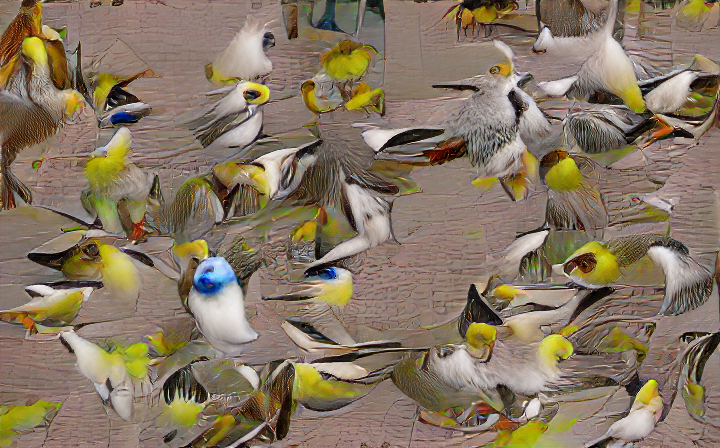
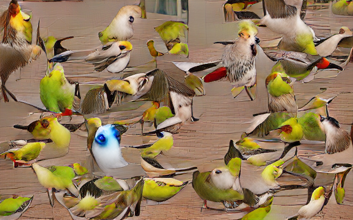
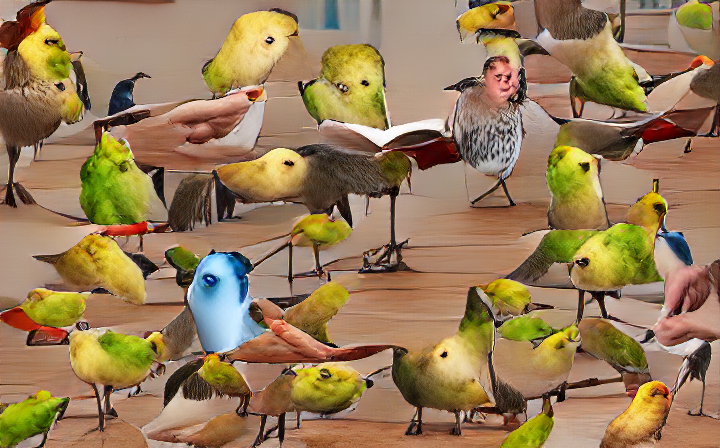
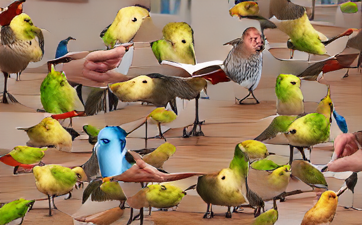
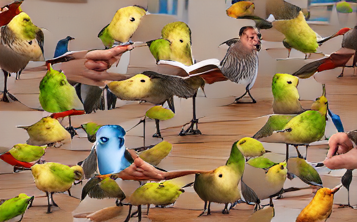
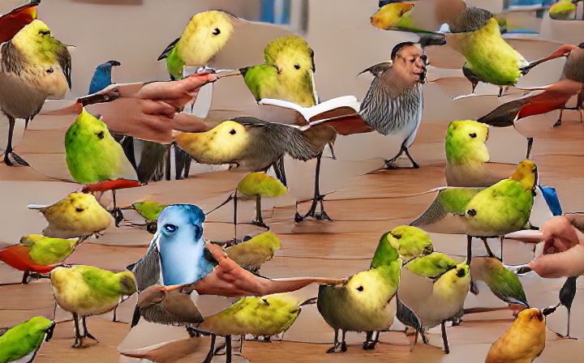
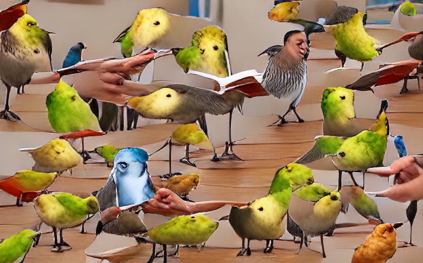
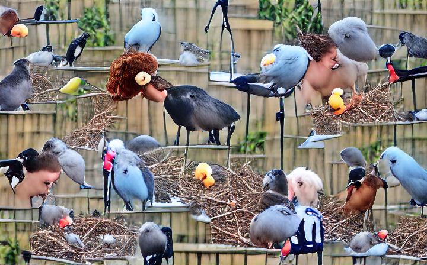
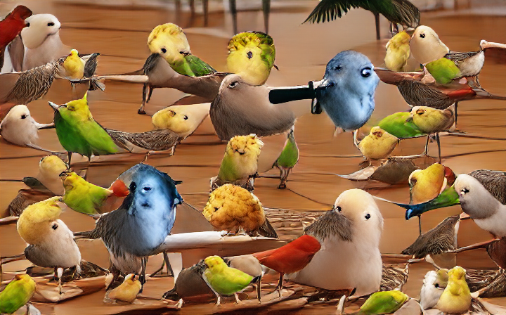

Basic tutorial
Basic tutorial¶
The next cell just creates the default configs and folders if they aren’t already present.
You normally shouldn’t need to do this, but if you want to “factory reset” to the defaults pytti ships with, delete the config/ directory and run the following command. If you have config files, don’t worry: it won’t overwrite them. It’ll just do nothing.
%%capture
!rm -rf config/
!rm -rf images_out/
!rm -rf outputs/
!python -m pytti.warmup
Next, we’ll author a config *.yaml file containing the settings that describe the experiment we want to run.
The file needs to go in the config/conf subdirectory and can be named whatever we want.
Under the current config system, the first line of the file needs to be: # @package _global_
After that, each setting goes on its own line. The order in which they appear does not matter, as long as each setting appears on a line of its own.
We’ll start by specifying a text prompt and see what happens. We’ll also specify a random seed as well, just to ensure the outputs are deterministic. This helps us understand exactly how changing a setting modifies the generated image.
%%writefile config/conf/my_first_pytti_art.yaml
# @package _global_
scenes: Everybody knows that the bird is the word
seed: 123
Writing config/conf/my_first_pytti_art.yaml
Next, we’ll pass this config file to the CLI to generate an image using the conf argument. Note that the name of this argument is actually the name of the subfolder the file is in. See the “Usage” article for details on precisely what’s going on here.
We just need to provide the CLI the name of the file without the *.yaml file extension.
!python -m pytti.workhorse conf=my_first_pytti_art
2022-02-19 19:28:47.654 | DEBUG | pytti.warmup:<module>:13 - /home/dmarx/miniconda3/envs/sandbox/lib/python3.9/site-packages/pytti
2022-02-19 19:28:47.654 | DEBUG | pytti.warmup:<module>:27 - /home/dmarx/miniconda3/envs/sandbox/lib/python3.9/site-packages/pytti
2022-02-19 19:28:47.654 | DEBUG | pytti.warmup:ensure_configs_exist:43 - Local config directory detected.
2022-02-19 19:28:49.232 | INFO | __main__:<module>:35 - Loading pytti...
2022-02-19 19:28:50.938 | INFO | __main__:<module>:77 - pytti loaded.
2022-02-19 19:28:50.938 | DEBUG | __main__:<module>:81 - ['/home/dmarx/proj/pytti-book', '/home/dmarx/miniconda3/envs/sandbox/lib/python39.zip', '/home/dmarx/miniconda3/envs/sandbox/lib/python3.9', '/home/dmarx/miniconda3/envs/sandbox/lib/python3.9/lib-dynload', '/home/dmarx/.local/lib/python3.9/site-packages', '/home/dmarx/miniconda3/envs/sandbox/lib/python3.9/site-packages', '/home/dmarx/proj/hypernerf', '/home/dmarx/proj/disco-diffusion/CLIP', '/home/dmarx/proj/disco-diffusion/guided-diffusion', '/home/dmarx/proj/disco-diffusion/taming-transformers']
2022-02-19 19:28:50.945 | DEBUG | hydra_plugins.pytti_local_config_searchpath_plugin.searchpath_append_cwd:manipulate_search_path:18 - /home/dmarx/proj/pytti-book/config/
2022-02-19 19:28:51.032 | DEBUG | __main__:_main:99 - {'scenes': 'Everybody knows that the bird is the word', 'scene_prefix': '', 'scene_suffix': '', 'direct_image_prompts': '', 'init_image': '', 'direct_init_weight': '', 'semantic_init_weight': '', 'image_model': 'Limited Palette', 'vqgan_model': 'sflckr', 'animation_mode': '3D', 'width': 180, 'height': 112, 'steps_per_scene': 100, 'steps_per_frame': 50, 'interpolation_steps': 0, 'learning_rate': None, 'reset_lr_each_frame': True, 'seed': 123, 'cutouts': 40, 'cut_pow': 2, 'cutout_border': 0.25, 'border_mode': 'clamp', 'field_of_view': 60, 'near_plane': 1, 'far_plane': 10000, 'translate_x': '-1700*sin(radians(1.5))', 'translate_y': '0', 'translate_z_3d': '(50+10*t)*sin(t/10*pi)**2', 'rotate_3d': '[cos(radians(1.5)), 0, -sin(radians(1.5))/sqrt(2), sin(radians(1.5))/sqrt(2)]', 'rotate_2d': '5', 'zoom_x_2d': '0', 'zoom_y_2d': '0', 'sampling_mode': 'bicubic', 'infill_mode': 'wrap', 'pre_animation_steps': 100, 'lock_camera': True, 'pixel_size': 4, 'smoothing_weight': 0.02, 'random_initial_palette': False, 'palette_size': 6, 'palettes': 9, 'gamma': 1, 'hdr_weight': 0.01, 'palette_normalization_weight': 0.2, 'show_palette': False, 'target_palette': '', 'lock_palette': False, 'frames_per_second': 12, 'direct_stabilization_weight': '', 'semantic_stabilization_weight': '', 'depth_stabilization_weight': '', 'edge_stabilization_weight': '', 'flow_stabilization_weight': '', 'video_path': '', 'frame_stride': 1, 'reencode_each_frame': True, 'flow_long_term_samples': 1, 'ViTB32': True, 'ViTB16': False, 'RN50': False, 'RN50x4': False, 'file_namespace': 'default', 'allow_overwrite': False, 'display_every': 50, 'clear_every': 0, 'display_scale': 1, 'save_every': 50, 'backups': 5, 'show_graphs': False, 'approximate_vram_usage': False, 'models_parent_dir': '${user_cache:}'}
2022-02-19 19:28:51.033 | DEBUG | __main__:_main:100 - {'scenes': 'Everybody knows that the bird is the word', 'scene_prefix': '', 'scene_suffix': '', 'direct_image_prompts': '', 'init_image': '', 'direct_init_weight': '', 'semantic_init_weight': '', 'image_model': 'Limited Palette', 'vqgan_model': 'sflckr', 'animation_mode': '3D', 'width': 180, 'height': 112, 'steps_per_scene': 100, 'steps_per_frame': 50, 'interpolation_steps': 0, 'learning_rate': None, 'reset_lr_each_frame': True, 'seed': 123, 'cutouts': 40, 'cut_pow': 2, 'cutout_border': 0.25, 'border_mode': 'clamp', 'field_of_view': 60, 'near_plane': 1, 'far_plane': 10000, 'translate_x': '-1700*sin(radians(1.5))', 'translate_y': '0', 'translate_z_3d': '(50+10*t)*sin(t/10*pi)**2', 'rotate_3d': '[cos(radians(1.5)), 0, -sin(radians(1.5))/sqrt(2), sin(radians(1.5))/sqrt(2)]', 'rotate_2d': '5', 'zoom_x_2d': '0', 'zoom_y_2d': '0', 'sampling_mode': 'bicubic', 'infill_mode': 'wrap', 'pre_animation_steps': 100, 'lock_camera': True, 'pixel_size': 4, 'smoothing_weight': 0.02, 'random_initial_palette': False, 'palette_size': 6, 'palettes': 9, 'gamma': 1, 'hdr_weight': 0.01, 'palette_normalization_weight': 0.2, 'show_palette': False, 'target_palette': '', 'lock_palette': False, 'frames_per_second': 12, 'direct_stabilization_weight': '', 'semantic_stabilization_weight': '', 'depth_stabilization_weight': '', 'edge_stabilization_weight': '', 'flow_stabilization_weight': '', 'video_path': '', 'frame_stride': 1, 'reencode_each_frame': True, 'flow_long_term_samples': 1, 'ViTB32': True, 'ViTB16': False, 'RN50': False, 'RN50x4': False, 'file_namespace': 'default', 'allow_overwrite': False, 'display_every': 50, 'clear_every': 0, 'display_scale': 1, 'save_every': 50, 'backups': 5, 'show_graphs': False, 'approximate_vram_usage': False, 'models_parent_dir': '/home/dmarx/.cache'}
2022-02-19 19:28:51.140 | DEBUG | pytti.Notebook:load_clip:225 - Loading CLIP...
2022-02-19 19:28:55.869 | DEBUG | pytti.Notebook:load_clip:227 - CLIP loaded.
2022-02-19 19:28:55.871 | INFO | __main__:do_run:151 - Loading prompts...
2022-02-19 19:28:56.275 | INFO | __main__:do_run:163 - Prompts loaded.
2022-02-19 19:28:56.276 | INFO | __main__:do_run:652 - Settings saved to /home/dmarx/proj/pytti-book/images_out//default/default_settings.txt
2022-02-19 19:28:56.280 | INFO | __main__:do_run:663 - Running prompt:
0%| | 0/100 [00:00<?, ?it/s]2022-02-19 19:28:56.281 | DEBUG | __main__:update:422 - Step 0 losses:
<PIL.Image.Image image mode=RGB size=720x448 at 0x7EFCDFE66CA0>
/home/dmarx/miniconda3/envs/sandbox/lib/python3.9/site-packages/torch/functional.py:445: UserWarning: torch.meshgrid: in an upcoming release, it will be required to pass the indexing argument. (Triggered internally at /opt/conda/conda-bld/pytorch_1639180487213/work/aten/src/ATen/native/TensorShape.cpp:2157.)
return _VF.meshgrid(tensors, **kwargs) # type: ignore[attr-defined]
1%|▍ | 1/100 [00:00<00:31, 3.15it/s]
3%|█▎ | 3/100 [00:00<00:14, 6.93it/s]
5%|██▏ | 5/100 [00:00<00:10, 8.78it/s]
7%|███ | 7/100 [00:00<00:09, 10.03it/s]
9%|███▊ | 9/100 [00:00<00:08, 10.88it/s]
11%|████▌ | 11/100 [00:01<00:07, 11.39it/s]
13%|█████▍ | 13/100 [00:01<00:07, 11.78it/s]
15%|██████▎ | 15/100 [00:01<00:07, 11.97it/s]
17%|███████▏ | 17/100 [00:01<00:06, 12.13it/s]
19%|███████▉ | 19/100 [00:01<00:06, 12.16it/s]
21%|████████▊ | 21/100 [00:01<00:06, 12.05it/s]
23%|█████████▋ | 23/100 [00:02<00:06, 12.05it/s]
25%|██████████▌ | 25/100 [00:02<00:06, 12.12it/s]
27%|███████████▎ | 27/100 [00:02<00:06, 12.16it/s]
29%|████████████▏ | 29/100 [00:02<00:05, 12.23it/s]
31%|█████████████ | 31/100 [00:02<00:05, 12.23it/s]
33%|█████████████▊ | 33/100 [00:02<00:05, 12.42it/s]
35%|██████████████▋ | 35/100 [00:03<00:05, 12.47it/s]
37%|███████████████▌ | 37/100 [00:03<00:05, 12.42it/s]
39%|████████████████▍ | 39/100 [00:03<00:04, 12.23it/s]
41%|█████████████████▏ | 41/100 [00:03<00:04, 12.18it/s]
43%|██████████████████ | 43/100 [00:03<00:04, 12.08it/s]
45%|██████████████████▉ | 45/100 [00:03<00:04, 12.03it/s]
47%|███████████████████▋ | 47/100 [00:04<00:04, 12.18it/s]
49%|████████████████████▌ | 49/100 [00:04<00:04, 12.14it/s]
2022-02-19 19:29:00.602 | DEBUG | __main__:update:422 - Step 50 losses:
2022-02-19 19:29:00.602 | DEBUG | __main__:update:425 - Everybody knows that.. word 0.870568
Name: 49, dtype: float64
<PIL.Image.Image image mode=RGB size=720x448 at 0x7EFCDFDC36A0>
51%|█████████████████████▍ | 51/100 [00:04<00:04, 11.27it/s]
53%|██████████████████████▎ | 53/100 [00:04<00:04, 11.55it/s]
55%|███████████████████████ | 55/100 [00:04<00:03, 11.69it/s]
57%|███████████████████████▉ | 57/100 [00:04<00:03, 11.85it/s]
59%|████████████████████████▊ | 59/100 [00:05<00:03, 11.83it/s]
61%|█████████████████████████▌ | 61/100 [00:05<00:03, 11.70it/s]
63%|██████████████████████████▍ | 63/100 [00:05<00:03, 11.62it/s]
65%|███████████████████████████▎ | 65/100 [00:05<00:03, 11.60it/s]
67%|████████████████████████████▏ | 67/100 [00:05<00:02, 11.55it/s]
69%|████████████████████████████▉ | 69/100 [00:05<00:02, 11.65it/s]
71%|█████████████████████████████▊ | 71/100 [00:06<00:02, 11.62it/s]
73%|██████████████████████████████▋ | 73/100 [00:06<00:02, 11.62it/s]
75%|███████████████████████████████▌ | 75/100 [00:06<00:02, 11.61it/s]
77%|████████████████████████████████▎ | 77/100 [00:06<00:01, 11.63it/s]
79%|█████████████████████████████████▏ | 79/100 [00:06<00:01, 11.63it/s]
81%|██████████████████████████████████ | 81/100 [00:07<00:01, 11.58it/s]
83%|██████████████████████████████████▊ | 83/100 [00:07<00:01, 11.53it/s]
85%|███████████████████████████████████▋ | 85/100 [00:07<00:01, 11.50it/s]
87%|████████████████████████████████████▌ | 87/100 [00:07<00:01, 11.44it/s]
89%|█████████████████████████████████████▍ | 89/100 [00:07<00:00, 11.47it/s]
91%|██████████████████████████████████████▏ | 91/100 [00:07<00:00, 11.57it/s]
93%|███████████████████████████████████████ | 93/100 [00:08<00:00, 11.58it/s]
95%|███████████████████████████████████████▉ | 95/100 [00:08<00:00, 11.68it/s]
97%|████████████████████████████████████████▋ | 97/100 [00:08<00:00, 11.58it/s]
99%|█████████████████████████████████████████▌| 99/100 [00:08<00:00, 11.63it/s]
100%|█████████████████████████████████████████| 100/100 [00:08<00:00, 11.56it/s]
2022-02-19 19:29:04.932 | INFO | __main__:_main:716 - Complete.
We now have an images_out/ subdirectory (if one didn’t already exist). Among the log messages above, we can see a collection of settings. The scenes argument we provided is among them, the rest came from config/default.yaml. The filename we provided to the conf= argument above specified the parameters we wanted to override relative to the default parameters. If we don’t specify a parameter, the default gets used. If we forget to add # @package _global_ to the top of the file, the overrides we want won’t take effect and only default values will be passed to the PyTTI “workhorse” renderer.
The file_namespace parameter determines where our generated images go and what they will be named. Because we didn’t specify otherwise, our experiment ran with file_namespace: default. This means our images will appear in a folder named images_out/default. Let’s see what’s in there:
ls images_out/default
default_1.png default_settings.txt
Our run generated a single image, default_1.png, and saved our settings as well, default_settings.txt. Both output files are named “default” here because we didn’t provide a file_namespace parameter. Let’s see what we generated!
from IPython.display import Image
path_to_image = "images_out/default/default_1.png"
Image(path_to_image)
I see some hints of birds in that image, but mostly it’s pretty chaotic. This is because we didn’t give PyTTI much opportunity to generate an image for us, and we didn’t provide an init_image as a starting place. Without an init_image the process defaults to initializing from random noise. This isn’t necessarily a bad thing, but because we didn’t give PyTTI time to do its thing, we mostly got random noise back out. Let’s let it run a bit longer, say steps_per_scene: 500 (the default was 50).
To better understand how the step number affects the image, we’ll tell PyTTI to show us the current state of the image periodically with display_every: 50: we’re generating for 500 steps, so checking progress every 50 steps let’s us see check in on our progress at 10% increments, which feels about right. For the purpose of this tutorial though, we’ll suppress the output to the notebook with the %%capture command at the top of the cell and just look at the results after.
Just to make sure there’s nothing unexpected in the defaults, I’ll also suppress any animations by setting the pre_animation_steps to a value greater than or equal to our steps_per_scene. Also, that whole “default” namespace thing was confusing, so let’s specify a namespace too.
%%writefile config/conf/my_first_pytti_art.yaml
# @package _global_
scenes: Everybody knows that the bird is the word
steps_per_scene: 500
save_every: 50
display_every: 50
pre_animation_steps: 500
file_namespace: bird
seed: 123
Overwriting config/conf/my_first_pytti_art.yaml
%%capture
!python -m pytti.workhorse conf=my_first_pytti_art
Just in case the image output is being finnicky, let’s pull up those images here:
      
Great! We have some birds! ….and we also have a bunch of words. This isn’t surprising: PyTTI likes to draw text into images, and also we had “word” in our prompt, biasing our image even more towards having “words” in it. But I don’t want to see words, I just like that song lyric and want to see the AI draw birds. The bird is already “the word” (or haven’t you heard?).
We can tell PyTTI we want a particular prompt to influence it more or less by applying a weight to the prompt. If we don’t specify a weight, the default weight value is 1. To try to get rid of the text in the image, let’s try adding the prompt "text:-1" to our scene.
%%writefile config/conf/my_first_pytti_art.yaml
# @package _global_
scenes: Everybody knows that the bird is the word | text:-1
steps_per_scene: 500
#save_every: 500
#display_every: 500
pre_animation_steps: 500
file_namespace: bird2
seed: 123
Overwriting config/conf/my_first_pytti_art.yaml
%%capture
!python -m pytti.workhorse conf=my_first_pytti_art
Let’s compare the same step from those two runs and see the difference:

Much Better! And quite difference! Obviously, the change we made affected the whole image, not just the text that was popping up. We can try to be more surgical with our modifications by using “semantic mask”. The semantic mask is a prompt which PyTTI uses to score the image, and masks out the image where the semantic prompt doesn’t match. We attach a semantic prompt with an underscore. Let’s see if instead of “subtracting” the text from the image like we did before, we can convert it into something else. We’ve got birds already: let’s try eggs. That feels on-theme.
%%writefile config/conf/my_first_pytti_art.yaml
# @package _global_
scenes: Everybody knows that the bird is the word | eggs in a nest_text
steps_per_scene: 500
#save_every: 500
#display_every: 500
pre_animation_steps: 500
file_namespace: bird3
seed: 123
Overwriting config/conf/my_first_pytti_art.yaml
%%capture
!python -m pytti.workhorse conf=my_first_pytti_art

Ok, so that sort of worked, but I liked the other way better. Let’s try using both methods, but reduce the weight on each to try to let the original version of the image dominate a bit more.
%%writefile config/conf/my_first_pytti_art.yaml
# @package _global_
scenes: Everybody knows that the bird is the word:2 | eggs in a nest:.5_text | test:-.8
steps_per_scene: 500
#save_every: 500
#display_every: 500
pre_animation_steps: 500
file_namespace: bird4
seed: 123
Overwriting config/conf/my_first_pytti_art.yaml
%%capture
!python -m pytti.workhorse conf=my_first_pytti_art

Much better! I’m not really feeling the pixel art thing though: let’s try switching from the default “Limited Palette” image model to image_model: VQGAN and see what that looks like. I’m feeling lazy though, so instead of modifying the config file like we were before, I’m just gonna use the same config from last time but override the image_model and file_namespace arguments directly from the command line.
%%capture
!python -m pytti.workhorse conf=my_first_pytti_art image_model=VQGAN file_namespace=bird5
As you can see, changing the image model doesn’t just add realism: it basically changes everything. Bye bye nests, bye bye eggs, hello chicks?
Moral of the story: your prompt-engineering will largely be image-model-dependent. Now that we’ve changed our image model, we need to re-tune our prompt for that model.